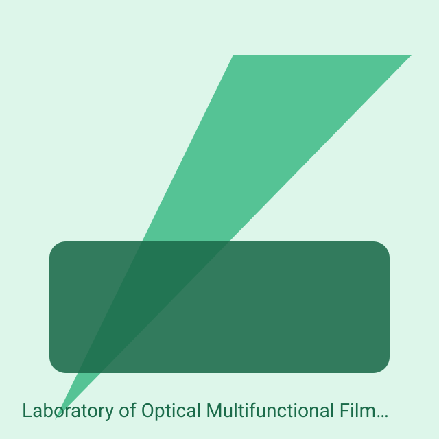
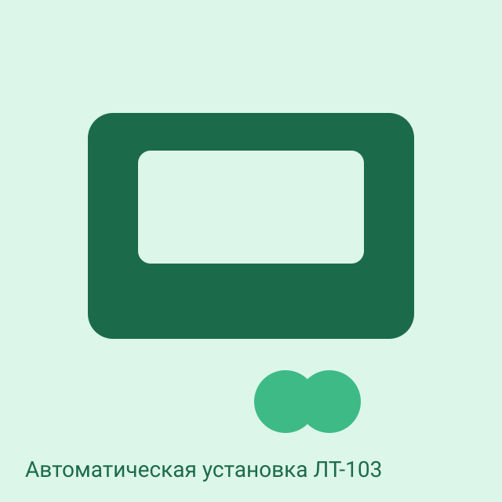
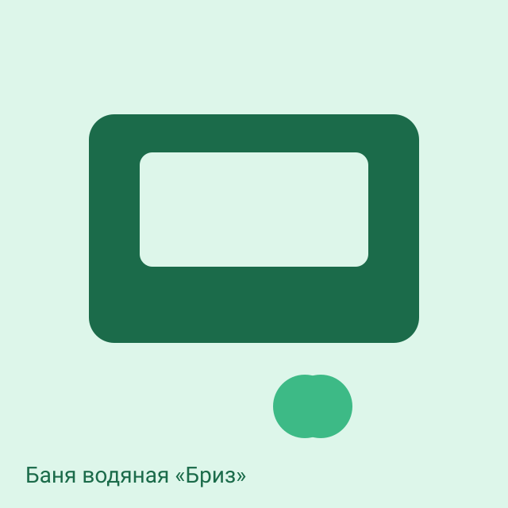
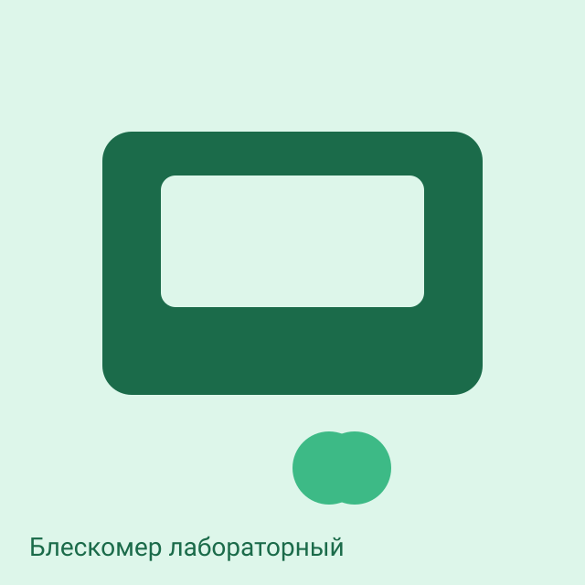
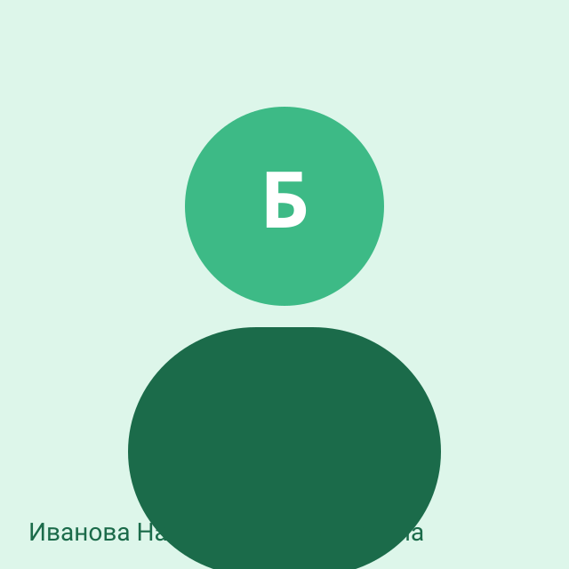
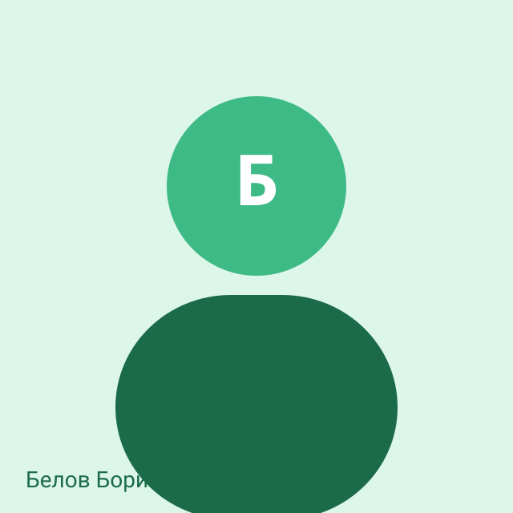
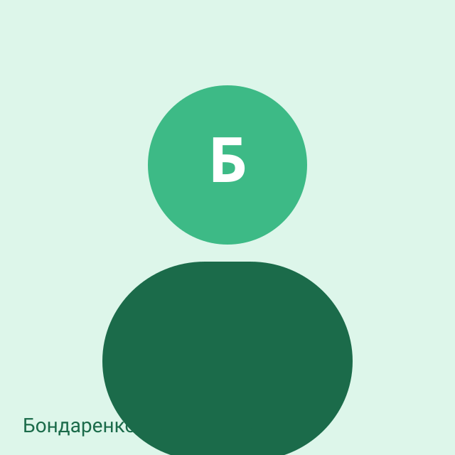

Оптические плёнки
Laboratory of Optical Multifunctional Films

About the laboratory
Поляроидные и бронзовые плёнки. В наполненном макете всё, что относится к этой лаборатории, начинается на букву Б.
Research areas
Equipment

Автоматическая установка ЛТ-103
Моно- и мультимолекулярные слои методом горизонтального осаждения. — Иванова Наталья Александровна

Баня водяная «Бриз»
Бережное осаждение мультислоёв. — Белов Борис Борисович · +375 (17) 200-01-11 · films-fish-1@ichnm.by

Блескомер лабораторный
Блеск и мутность плёнок. — Белов Борис Борисович · +375 (17) 200-01-11 · films-fish-1@ichnm.by
Services and developments
Our team
The card opens the personal page. A person may belong to several units. The h-index and database profiles live on the personal page.

Заведующий лабораторией
Иванова Наталья Александровна
Кандидат химических наук
Ведущий научный сотрудник
Борисова Белла Борисовна
к.х.н.
Тел. +375 (17) 200-01-10

Научный сотрудник
Белов Борис Борисович
к.х.н.
Тел. +375 (17) 200-01-11

Научный сотрудник
Бондаренко Богдан Борисович
Тел. +375 (17) 200-01-12
Аспирант
Булатова Бэла Борисовна
аспирант
Тел. +375 (17) 200-01-13
Научный сотрудник
Баранов Борис Борисович
Тел. +375 (17) 200-01-14
Selected publications
2024
- Борисова Б. Б. Бриллиантовый блеск поляроидов // Плёнки. 2024. Т. 2. С. 14–22. doi:10.0000/ichnm.films.1
2023
- Иванова Н. А. и др. Оптические плёнки с заданной анизотропией (макет). doi:10.0000/ichnm.mock.films-1
- Белов Б. Б. Бромированные слои Блоджетт // Бюллетень. 2023. № 6. С. 5–12. doi:10.0000/ichnm.films.2
2022
- Бондаренко Б. Б. Бумажные блистеры // Банкноты. 2022. С. 9–16. doi:10.0000/ichnm.films.3
Contacts
Address: 220084, Minsk, 36 F. Skaryna Street
Tel. +375 (17) 317-70-07
E-mail: films@ichnm.by
Head: Иванова Наталья Александровна